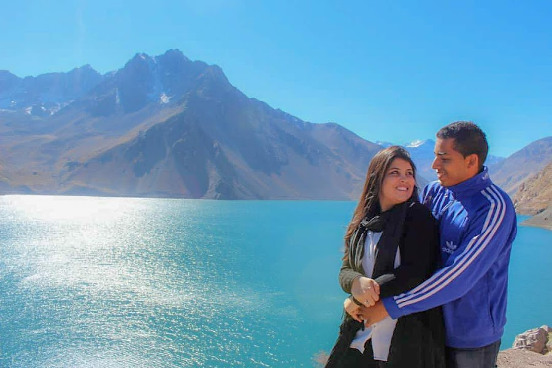
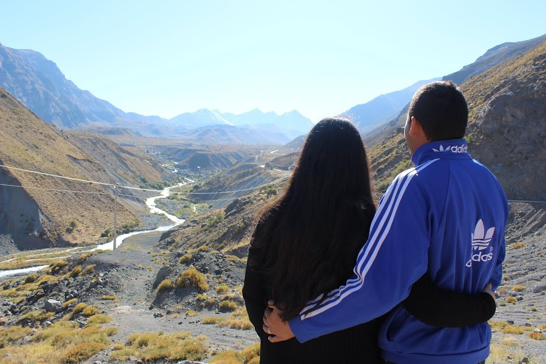
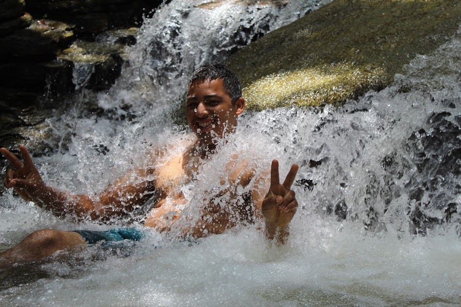
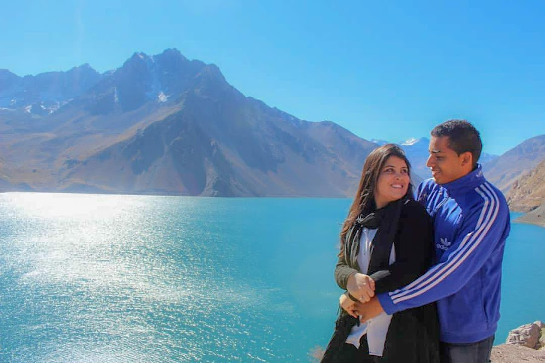
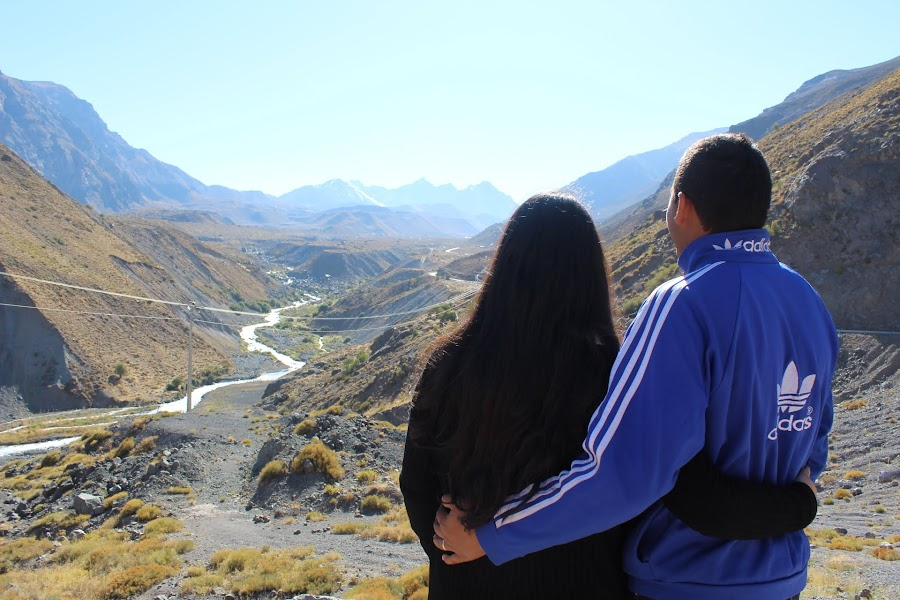
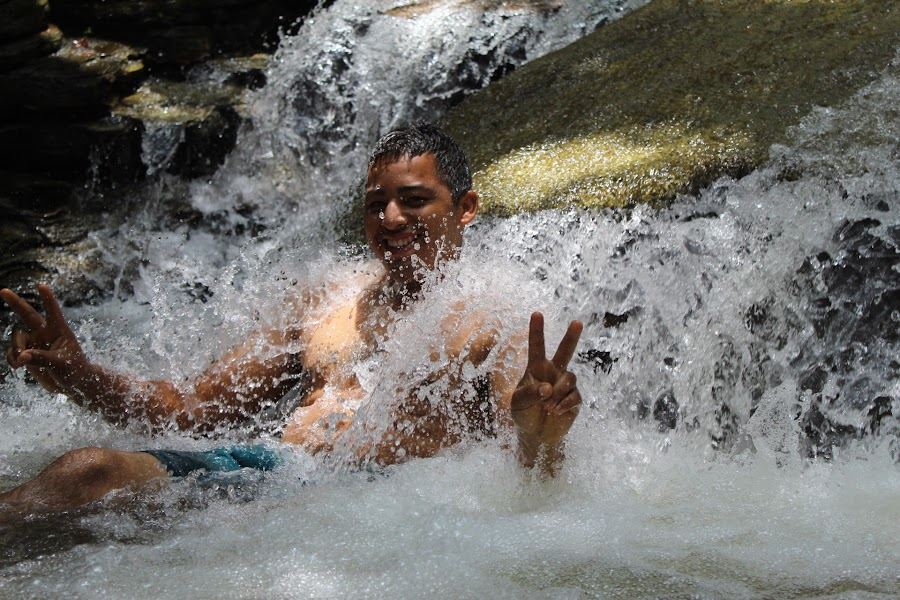

Meu nome é Tiago Marques, estou inciando uma nova jornada em minha vida dentro da Tecnologia; atualmente sou
Formado em Logistica desde 2015, trabalhei nesta área por alguns anos mas, logo mais a frente decidi ser
autônomo e trabalhar como empreededor no ramo de Borracharia contribuindo para um negócio de família onde
atuei por 7 anos.
sou aventureiro e amo a natureza. tenho como hoby tirar fotos noturnas e tambem tocar
Teclado em casa e na igreja.
Meu objetivo é seguir uma carreira sólida em Tecnologia da informação no desenvolvimento de sistemas, buscar novos caminhos dentro desta imensa área. neste momento não tenho experiêcia, mas estou em busca de uma oportunidade que me ajude a entrar para este mercado no qual tanto almejo crescer e desenvolver como profissonal de Tecnologia.
 




